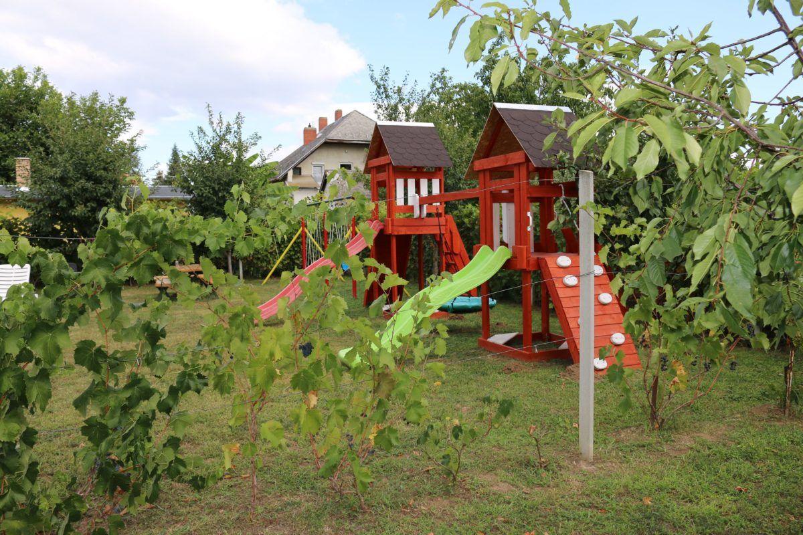
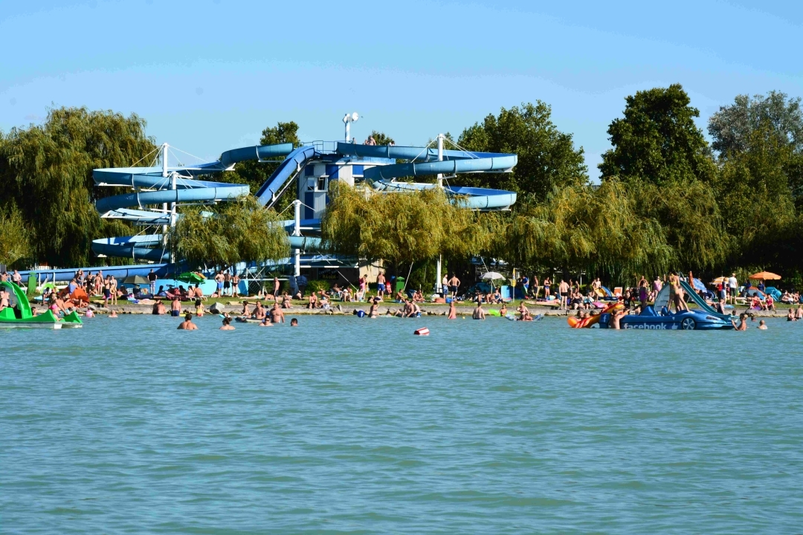
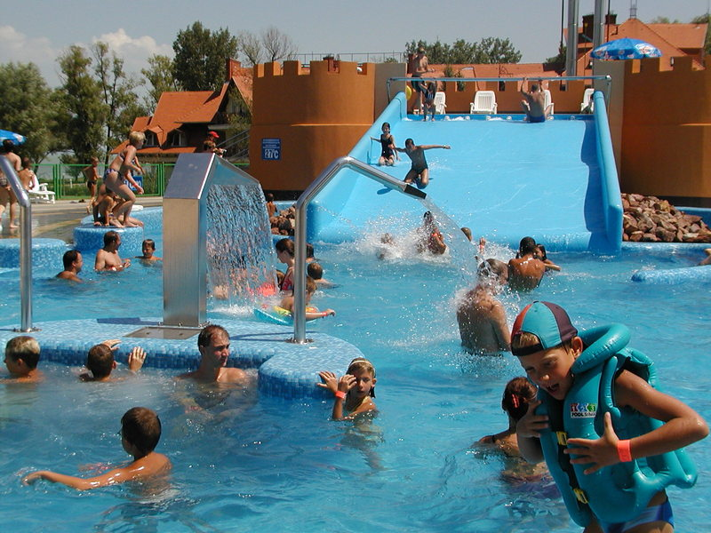
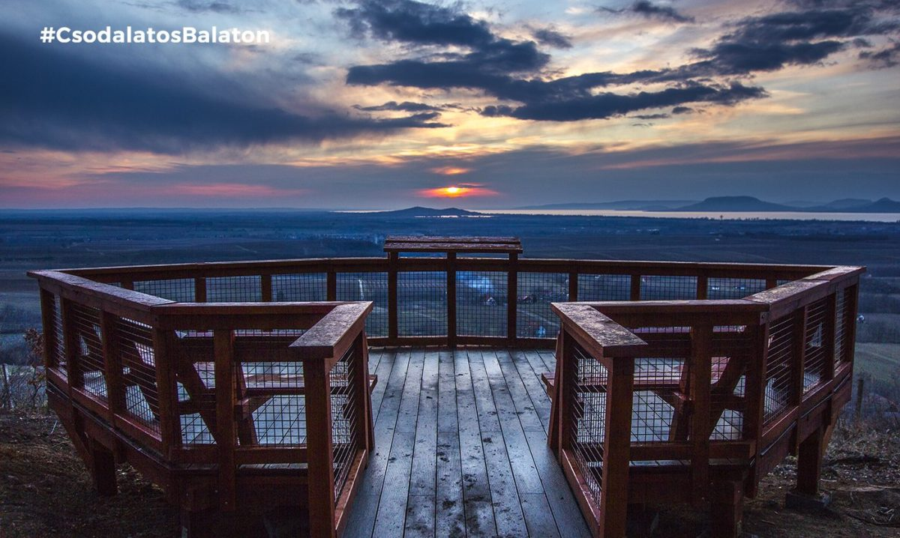
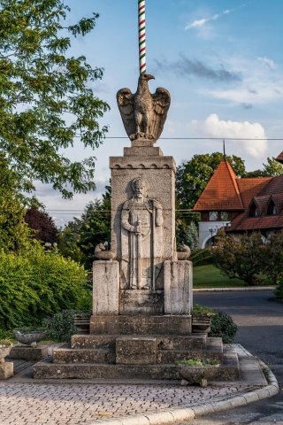

✦
Szállásaink
Három telek, kilenc otthonos apartman
Minden vendégházhoz önálló kert, terasz és bejárat tartozik — mégis mindegyiket összeköti a közös medence, a játszótér és a focipálya.
Balatonlelle · 1999 óta családi vendéglátás
Kilenc önálló apartman egy 4000 m²-es, szőlőlugasokkal tagolt teleken — medencével, játszótérrel és saját kerttel minden ház mellett. Balatonlelle kertvárosi részén, 700 méterre a parttól.
Vendégházaink Balatonlelle kertvárosi, csendes nyaraló övezetében állnak, mindössze 700 méterre a parttól és a központi strandoktól. Az L+Z Vendégházak és a Bögre Csárda Étterem négy egymás melletti telken, összesen 4000 m² zöld területen fogadja vendégeit — minden házhoz saját kertrész, szőlőlugas és nyugalom tartozik.
Bővebben rólunk
Minden vendégházhoz önálló kert, terasz és bejárat tartozik — mégis mindegyiket összeköti a közös medence, a játszótér és a focipálya.
Fedett, biztonságos medence a telkek között, sétatávolságra minden háztól.
Gyerekhinta, csúszda és mini focipálya a közös, önálló telekrészen.
Minden apartmanhoz külön kertrész és terasz tartozik, élő szőlőlugas-térelválasztóval.
Kerti grillező és bográcsozó hely, napozóágyakkal, kerti bútorokkal felszerelve.
Zárt udvari parkolás minden telken, több autó egyidejű elhelyezésére.
Igény esetén gyerekágyat és gyerekfürdető kádat is biztosítunk.
A vendégházainkhoz tartozó kis kerti kapun át pár lépés a Bögre Csárda Étterem, ahol à la carte étkezéssel, valamint igény szerint fél- és teljes panziós ellátással is várjuk vendégeinket.
Kapcsolat & asztalfoglalás
Szabad Strand
Élményfürdő
Kishegyi kilátó
BelvárosÍrjon vagy hívjon minket — szívesen segítünk kiválasztani az Önöknek legmegfelelőbb vendégházat.